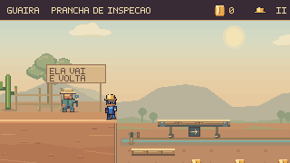
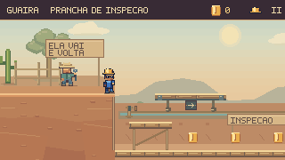
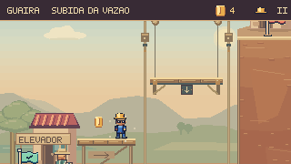
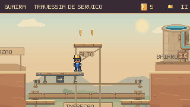
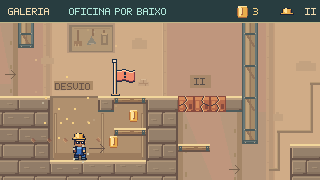
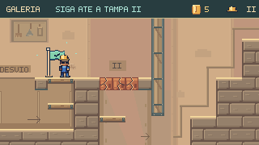

Revisão mais recente: recuperação, costelas e movimento dos ossos do Ossabravo →
Continuação: caminhos da Travessia e dos Respiros →
Ver o caminho.
Escolher o percurso.
A Subida à Casa da Vazão e a Galeria dos Remendos receberam mudanças nos percursos, na exploração e no enquadramento. O trabalho parte da tela do jogador: perceber uma opção, entender onde vai cair e continuar depois de um erro.
A decisão precisa aparecer na tela


O piso seco aparece antes da queda. A exploração inferior tem saída na margem seguinte, por um degrau real; o jogador pode continuar em direção ao checkpoint.
Cada par usa a mesma sequência de comandos nas duas versões, a partir de uma tentativa nova. As câmeras são as do jogo. Não há posicionamento manual do personagem para produzir estas comparações.
Superfícies que explicam o caminho
As bordas claras correspondem aos apoios da física. Os andaimes têm postes e escoras, as tampas obrigatórias recebem I e II, e a oficina mostra a ligação entre entrada e saída.
Informação no momento da escolha
A sacada revela o destino do elevador. O mirante e suas moedas aparecem antes do salto; o degrau de recuperação permanece visível. O aviso de checkpoint deixou de cobrir essa área.
Subida · atravessar, embarcar, transferir
O canal inferior deixou de terminar em retorno obrigatório à entrada. Depois dele, a sacada de manutenção permite embarcar no elevador durante o movimento. No trecho superior, um mirante oferece uma transferência da prancha móvel para um apoio fixo e outro salto em direção à Casa.


Um salto curto que não alcança a Casa retorna ao degrau de inspeção. Os testes conferem três durações de salto nesse erro e a conclusão posterior, sem perder o capacete.
Galeria · descer, explorar, reencontrar o caminho
A oficina sob a tampa opcional agora forma um circuito. O jogador desce, atravessa a passagem e sobe pelos tablados junto à bandeira. A saída fica antes da tampa II, mantendo a ordem dos desafios e tornando claro o reencontro com o percurso principal.


O HUD acompanha as etapas: tampa I, oficina, tampa II e subida até a luz. A orientação contextual também aparece na interface principal de Guaíra. O capacete permanece abaixo do HUD durante os saltos.
O que foi verificado
Build e validadores aprovados. A suíte ampla passou com 977 testes; após o ajuste de orientação no capítulo, passaram 152 testes direcionados, incluindo os dois novos testes de integração. Esta rodada acrescenta 18 testes de percurso, leitura, recuperação e integração.
Os dois percursos passaram com teclado, toque simulado e movimento reduzido. Também foram executados no capítulo real em Edge, com teclado e avanço controlado da simulação a 60 Hz. As oito cenas foram conferidas quanto a entrada, pausa, estabilidade do quadro e retorno ao mapa.
Os vídeos usam comandos ensaiados e captura a 15 quadros por segundo; não medem tempo de descoberta nem desempenho do navegador. Não houve teste com jogadores externos. A próxima avaliação humana deve observar se as opções são percebidas e quais trajetos as pessoas escolhem repetir.
Decisões e reprodução · Capturas e percursos · Percursos no capítulo · Conferência das oito cenas